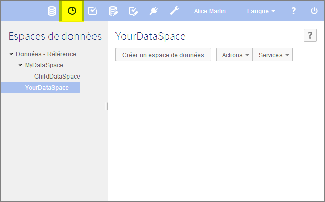

Introduction aux espaces de données
Contenu de la section
Présentation
Fonction d'un espace de données
Le cycle de vie des données est souvent complexe. Il est parfois nécessaire d'entretenir une version courante des données tout en travaillant sur des évolutions futures. De plus, il faut conserver une trace des états intermédiaires. EBX5 rend ces démarches possibles grâce aux espaces de données et aux images.
Un espace de données est un conteneur qui isole différentes versions de jeux de données et les organise. Des espaces de données enfants peuvent être créés à partir d'un espace de données. Un espace de données enfant est initialisé avec le même état que son parent au moment de sa création. Ainsi, des modifications peuvent être effectuées isolément dans l'espace de données enfant, sans impacter l'espace de données parent ni d'autres espaces de données. Lorsque les modifications dans l'espace de données enfant sont terminées, cet espace de données peut être fusionné avec son parent.
Une image est une copie statique d'un espace de données qui capture son état et tout son contenu à un moment donné. Les images peuvent être consultées, exportées, et comparées à d'autres espaces de données.

Concepts de base liés aux espaces de données
La compréhension des termes suivants est recommandée pour l'utilisation des espaces de données :
Utilisation de l'interface utilisateur de la section Espace de données
Les espaces de données sont créés, consultés et modifiés dans la section Espaces de données.
Note
Seuls les utilisateurs autorisés peuvent accéder à cet écran via la 'Perspective avancée'.
Le panneau de navigation affiche l'organisation hiérarchique des espaces de données existants, tandis que l'espace de travail affiche les informations concernant l'espace de données sélectionné et liste ses images.

Voir aussi
Concepts apparentésJeux de données
 Sommaire du guide utilisateur
Sommaire du guide utilisateur